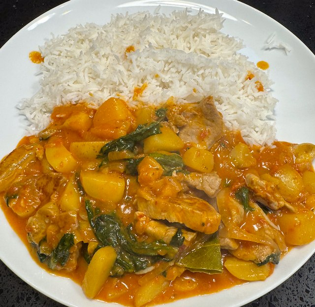

Thai Red Curry Pork

Serves: 4
Cook Time: 1 hour
Ingredients
- 500g new potatoes, 1cm cube
- sunflower oil
- 1 onion, sliced
- 2 garlic cloves, minced
- 2 tsp root ginger, grated
- 4 tbsp thai red curry paste
- 1 400g tin tomatoes, chopped
- 100g dried apricots, chopped
- chicken stock pot
- 1 tsp dried chilli
- 1 bay leaf
- 200ml coconut milk
- 1 tsp palm sugar
- ½ lime, juiced
- 125g spinach
- 300g pork fillet, cut in strips
Method
Heat frying pan to hot. Add oil, potatoes, salt. Turn heat to medium and fry potatoes to get some colour.
In separate pan on low heat fry onion to soften, about 10-15 min. Turn up heat. Add garlic, ginger and curry paste and fry for 2 min.
Add tomatoes, apricots, stock, chilli, bay and fried potatoes. Simmer for 20 min.
Heat frying pan to hot. Add pork, salt and fry for about 5 min, till cooked.
To the sauce, add coconut milk, palm sugar, lime juice. Stir, then add spinach and cook for 3 min.
Add the cooked pork, stir and taste for salt.